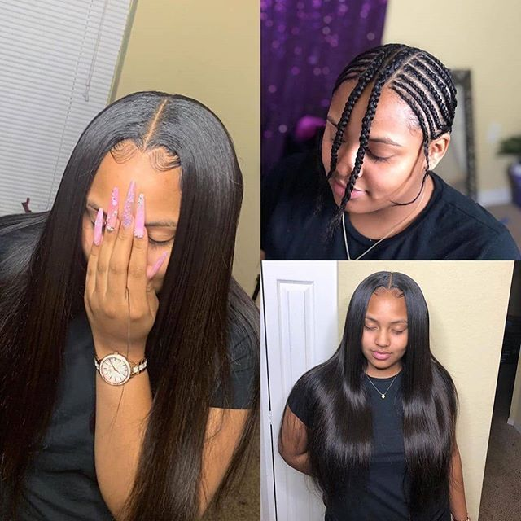
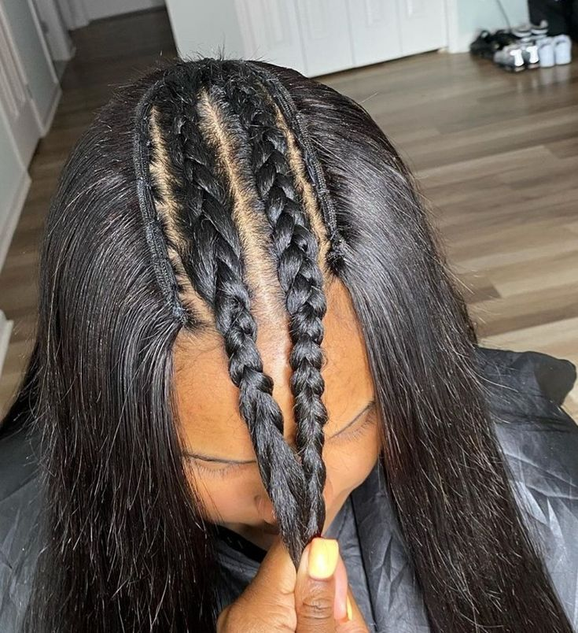

O que é EntreLace?
O entrelace é diferente da front lace e da wig porque ele não é uma peruca pronta. Trata-se de uma técnica de aplicação feita diretamente no cabelo da pessoa. Nesse método, o cabelo natural é trançado rente ao couro cabeludo e, em seguida, o aplique é costurado nessas tranças. Isso faz com que o cabelo fique bem fixo e com aparência mais integrada ao natural.
Ao contrário da front lace, que possui uma tela (lace) na parte frontal para criar um efeito mais natural na linha do cabelo, o entrelace não utiliza essa tela frontal para simular o nascimento dos fios. A naturalidade do entrelace depende mais do acabamento da costura e da parte frontal escolhida para finalizar o penteado. Já em relação à wig, a principal diferença é a fixação. A wig é uma peruca pronta que pode ser colocada e retirada facilmente, oferecendo praticidade e mudança rápida de visual. O entrelace, por outro lado, permanece fixo por semanas e exige manutenção profissional para retirada ou ajuste.
Portanto, enquanto a front lace e a wig oferecem mais praticidade na colocação e remoção, o entrelace se destaca pela durabilidade e fixação mais prolongada.

